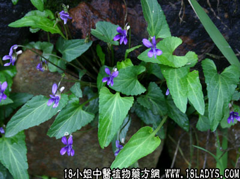

古籍名：玉如意《本草纲目拾遗》。
别名：犁咀菜、玉如意、犁口草。
植物名：长萼堇菜。
生长环境：本品为簇生草本。为一种常见野草，喜生于阳光充足的荒坡草地或田基边、园地等地方。
分布：广东各地及我国西南地区。
入药部分：全草。
采集期：夏、秋。
自采地点：家种、或野生山岗湿润第。
性味：清肝热。
主治、用量和用法：1、眼热红痛，眼起红筋；生用捣烂，敷眼，或生用5钱，加猪瘦肉煎水服；2、乳痈，配伍用；3、热毒大疮，生用加片糖捣烂，外敷患处。
验方1：（治乳痈方）犁头草5钱、半边莲5钱，捣烂冲热酒饮，其渣敷患处。
（方解）本方犁头草清热消肿；半边莲活血疏峰解毒；冲热酒饮而行气，使邪无不散，取其药渣外敷局部，为内外兼治之法。
（方歌）犁头草能治乳痈，半边莲捣热酒冲，饮后用渣敷患处，肿消毒解乳痈松。
验方2：（治眼热肿痛方）犁头草5钱、珍珠草5钱、清水二碗半，煎城一碗服。
（方解）本方犁头草清肝散热；珍珠草清肝经风热，合为散风治眼热良方。
（方歌）风热眼痛红又肿，珍珠犁头用全草，热散风除眼复明，疾愈方知两样宝。
参考资料：《纲目拾遗》玉如意、剪刀草、大风草、分红白花两种，白花者入药为佳，家种亦有紫白花两种，白花为地丁，即剪刀，紫花者为金剪刀，功效同，治乳痈、疔疮、儿背生泡、脚上生疮，乱孔入蜂巢，痘儿气急，又谓家种如如意草为真玉如意，野生者是银剪刀，性劣。